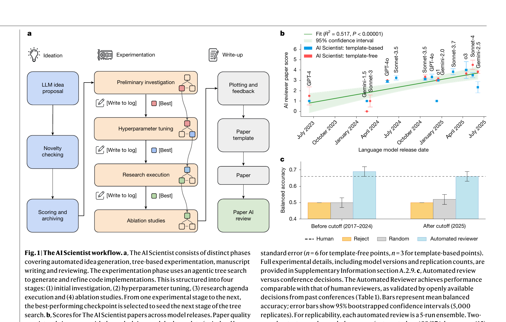
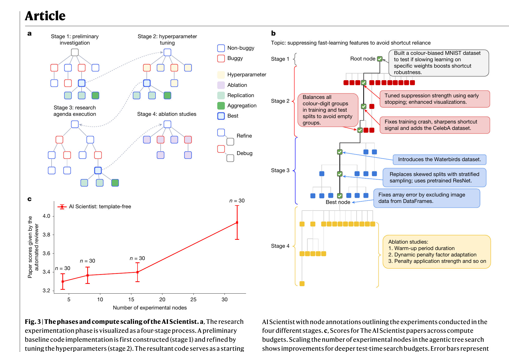
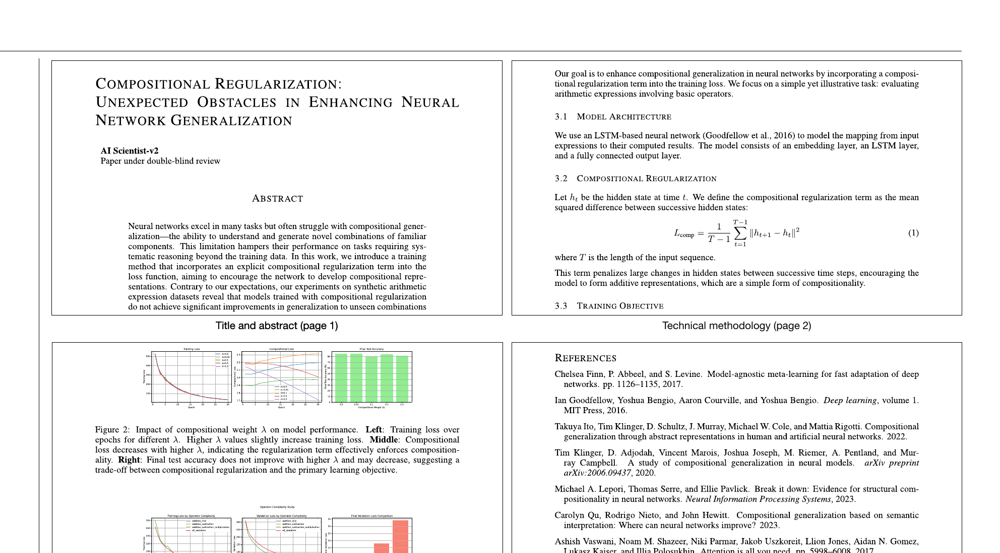

AI 能帮忙写代码、搜文献、画图了——但能不能自己从头到尾做一篇研究？
科学研究的流水线很长：提出想法、搜文献、设计实验、写代码、跑实验、分析结果、写论文、同行评审。每一步都有 AI 工具在帮忙——Copilot 写代码、Semantic Scholar 搜文献、GPT 帮润色论文。但没有一个系统能把整条流水线串起来，从一个研究方向出发，自己完成到一篇可提交的论文。
不是做不到单步。难的是自动化整条链路：想法要新颖（不能重复已有工作）、实验要能跑通（代码 bug 要自己修）、结果要有意义（不是随机数字）、论文要规范（LaTeX 格式、引用完整）、还要经得起同行评审。每一步的失败都可能让下游全线崩溃。
The AI Scientist 是一个端到端的自动研究系统。给它一个机器学习研究方向（比如"探索深度学习的组合泛化能力"），它自己：
论文有两个版本：Template-based（给一个代码模板，在上面做变体）和 Template-free（只给研究方向，从零开始）。

实验执行阶段用了一个四阶段的树搜索（agentic tree search）：

光会写论文不够，还得知道写得好不好。The AI Scientist 内置了一个 Automated Reviewer——用 LLM 模拟 NeurIPS 的同行评审流程。5 个独立的 AI 评审给分，一个 meta-reviewer 汇总。
| 评审者 | Balanced Accuracy | F1 Score | AUC |
|---|---|---|---|
| Human (NeurIPS) | 0.66 | 0.49 | 0.65 |
| Automated Reviewer (训练集内) | 0.69 ± 0.04 | 0.62 ± 0.09 | 0.69 ± 0.09 |
| Automated Reviewer (训练集外) | 0.66 ± 0.03 | 0.67 ± 0.09 | 0.65 ± 0.10 |
自动评审的准确度和人类评审相当（balanced accuracy 0.66-0.69 vs 人类 0.66）。即使在训练集截止日期之后的论文上，表现也没有明显下降——说明不是靠记忆已有论文。
他们做了一个大胆的实验：把 AI Scientist 生成的 3 篇论文（Template-free 版本）投到了 ICLR 2025 的一个 workshop（ICBINB: I Can't Believe It's Not Better）。这是一个真实的同行评审场景——评审人知道有些论文可能是 AI 生成的，但不知道哪些是。
结果：1 篇被接收（评分 6, 7, 6），排在 workshop 前 45%。另外两篇被拒。被接收的那篇报告了一个"负面结果"——组合正则化并没有如预期那样提升组合泛化能力。

按照预设的伦理协议，所有 AI 生成的论文在评审结束后都被撤回，不正式发表。
两个 scaling 趋势值得注意。第一，底层 LLM 越强，论文质量越高（Figure 1b），从 GPT-4 到 Sonnet-3.7 的提升是显著的且统计有效（P < 0.00001）。第二，给更多计算预算（更多搜索树节点），论文质量也稳步提升（Figure 3c）。
把实验过程组织成一棵搜索树。每个节点是一次实验尝试（包含代码、运行结果、图表）。Bug 节点自动修复，成功节点被评分并扩展。四个阶段（原型→调参→核心实验→消融）依次推进。
一个博士生在做实验。他不是线性地做：先试一个方案，不行就记下问题换一个方案试，好的方案上面再做变体。这就是一棵搜索树。AI Scientist 把这个过程自动化了——包括"代码跑不通就调试"这一步。
线性的实验流程（做一个实验→分析→做下一个）太脆弱。树搜索允许并行探索多个方向，自动回退失败分支，保留最好的路径。这是系统能在无人干预下完成多步实验的核心机制。
用 LLM 集成模拟同行评审流程：5 个独立 AI 评审 + 1 个 meta-reviewer，按 NeurIPS 评审标准打分、列优缺点、给 accept/reject 决定。
请 5 个 AI "审稿人"分别读论文、独立打分，然后一个 AI "区域主席"综合五份评审意见做最终决定。和真实会议的评审流程完全对齐。
没有自动评审，就没法在系统内部形成质量反馈回路。自动评审让系统能评估自己产出的论文质量，用于比较不同 LLM、不同计算预算下的表现，也让整个流程形成闭环。
这篇论文最重要的信号不是"AI 写的论文被接收了"——workshop 的接受率 70%，门槛不高。重要的是：论文质量随模型变强、计算变多而稳定提升，没有明显的天花板。这意味着未来更好的模型+更多的计算，会产出更好的论文。系统的能力不受架构限制，受限于底层模型的能力和给予的计算量。
另一个被低估的点：系统的 Automated Reviewer 和人类评审的一致性几乎一样好。如果 AI 能可靠地评估研究质量，那它不仅能写论文，还能当守门人。这同时是一个机会（加速评审）和一个风险（如果 AI 的审美偏好和人类不同，可能系统性地过滤掉某类研究）。
选题抓住了一个时代性的问题。端到端自动研究是 AI 领域最大胆的愿景之一。发在 Nature 上合理——这不是一个技术细节的改进，而是一个范式层面的演示。
方法是纯工程编排，没有新的算法或模型。四阶段树搜索、自动评审、LaTeX 生成，每一步都是现有技术的组合。但组合本身是贡献——把这么多步骤串通、让整个流程在无人干预下跑通，工程量不小。Template-free 版本比 Template-based 有意思得多——不依赖人给的代码模板，真正从研究方向出发。
实验最有说服力的是真人评审那部分——把论文投到真实会议，通过了盲审。这比任何自动指标都有力。但需要注意几点。第一，通过的是 workshop（70% 接受率），不是主会（32% 接受率）。论文自己也承认"none met the higher bar for a main ICLR conference publication"。第二，只投了 3 篇，其中 2 篇被拒。样本太小，不能说"AI 能可靠地通过同行评审"。第三，所有实验都在 ML 领域内——实验就是跑 Python 代码。推广到需要物理实验的领域（化学、生物）需要完全不同的基础设施。第四，论文没有报告总成本（API 费用 + 计算时间）。Template-free 版本一篇论文跑 15 小时，用了多少 token、花了多少钱？
Limitations 部分写得诚实。论文列了常见失败模式：naive 的想法、不完整的实现、主文和附录图表重复、幻觉式引用。这些都是真问题，没有掩饰。
伦理处理值得肯定。和 ICLR 组织者提前沟通、获得 IRB 批准、评审人被告知有 AI 论文存在、所有 AI 论文评审后撤回。这是负责任的做法。
迁移：四阶段渐进实验的树搜索模式（原型→调参→核心实验→消融）可以直接借鉴到任何需要多步实验探索的场景。比如热力学模型的参数标定：先用粗网格找到大致可行区域（Stage 1），再在好的区域做精细调参（Stage 2），然后跑完整验证（Stage 3），最后做敏感性分析（Stage 4）。关键技巧是每个阶段只保留最好的分支往下走——这个剪枝策略可以大幅减少总计算量。
反转：直觉上，"AI 做科研"需要 AI 先真正理解科学。这篇论文说：不用。当前的 LLM 不需要"理解"就能产出通过低门槛评审的论文。这不是在贬低 AI 的能力，而是在说：科学研究的大量工作——搜文献、写代码、跑实验、排版论文——本质上是可自动化的流程工作，不需要深层理解。真正需要理解的部分——提出颠覆性想法、发现反直觉的现象——AI Scientist 目前做不到，论文也承认了这一点。